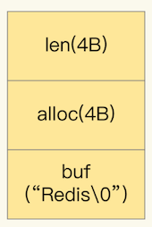
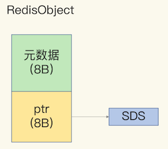
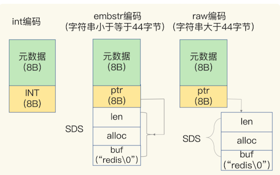
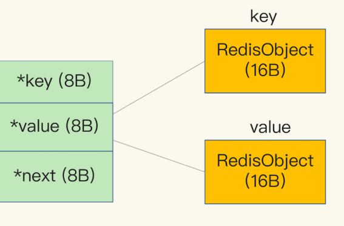
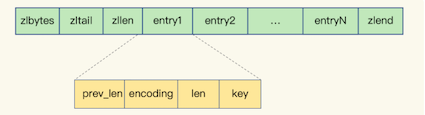

第一节 Redis的String类型数据结构，及其底层实现
String 类型的内存空间消耗问题，以及选择节省内存开销的数据类型的解决方案。
1、String 类型的消耗内存空间
图片存储系统，要求这个系统能快速地记录图片 ID 和图片在存储系统中保存时的 ID（可以直接叫作图片存储对象 ID）。同时，还要能够根据图片 ID 快速查找到图片存储对象 ID。
因为图片数量巨大，所以我们就用 10 位数来表示图片 ID 和图片存储对象 ID，例如，图片 ID 为 1101000051，它在存储系统中对应的 ID 号是 3301000051。
photo_id: 1101000051
photo_obj_id: 3301000051
图片 ID 和图片存储对象 ID 正好一一对应，是典型的“键 - 单值”模式。
所谓的“单值”，就是指键值对中的值就是一个值，而不是一个集合，这和 String 类型提供的“一个键对应一个值的数据”的保存形式刚好契合。
String 类型可以保存二进制字节流，只要把数据转成二进制字节数组，就可以保存了。
- 第一个方案就是用 String 保存数据。
- 我们把图片 ID 和图片存储对象 ID 分别作为键值对的 key 和 value 来保存，其中，图片存储对象 ID 用了 String 类型。
我们保存了 1 亿张图片，大约用了 6.4GB 的内存。但是，随着图片数据量的不断增加，我们的 Redis 内存使用量也在增加，结果就遇到了大内存 Redis 实例因为生成 RDB 而响应变慢的问题。
String 类型并不是一种好的选择，我们还需要进一步寻找能节省内存开销的数据类型方案。
String 类型并不是适用于所有场合的，它有一个明显的短板，就是它保存数据时所消耗的内存空间较多。
集合类型有非常节省内存空间的底层实现结构，但是，集合类型保存的数据模式，是一个键对应一系列值，并不适合直接保存单值的键值对。所以，我们就使用二级编码的方法，实现了用集合类型保存单值键值对，Redis 实例的内存空间消耗明显下降了。
2、为什么 String 类型内存开销大？
保存了 1 亿张图片的信息，用了约 6.4GB 的内存，一个图片 ID 和图片存储对象 ID 的记录平均用了 64 字节。
一组图片 ID 及其存储对象 ID 的记录，实际只需要 16 字节就可以了
图片 ID 和图片存储对象 ID 都是 10 位数，我们可以用两个 8 字节的 Long 类型表示这两个 ID。因为 8 字节的 Long 类型最大可以表示 2 的 64 次方的数值，所以肯定可以表示 10 位数。
为什么 String 类型却用了 64 字节呢？
其实，除了记录实际数据，String 类型还需要额外的内存空间记录数据长度、空间使用等信息，这些信息也叫作元数据。
当实际保存的数据较小时，元数据的空间开销就显得比较大了，有点“喧宾夺主”的意思。
2-1 String 类型具体是怎么保存数据的呢
保存 64 位有符号整数时，String 类型会把它保存为一个 8 字节的 Long 类型整数，这种保存方式通常也叫作 int 编码方式。
当你保存的数据中包含字符时，String 类型就会用简单动态字符串（Simple Dynamic String，SDS）结构体来保存

buf：字节数组，保存实际数据。为了表示字节数组的结束，Redis 会自动在数组最后加一个“\0”，这就会额外占用 1 个字节的开销。- len：占 4 个字节，表示 buf 的已用长度。
- alloc：也占个 4 字节，表示 buf 的实际分配长度，一般大于 len。
在 SDS 中，buf 保存实际数据，而 len 和 alloc 本身其实是 SDS 结构体的额外开销。
对于 String 类型来说，除了 SDS 的额外开销，还有一个来自于 RedisObject 结构体的开销。
2-2 RedisObject
因为 Redis 的数据类型有很多，而且，不同数据类型都有些相同的元数据要记录（比如最后一次访问的时间、被引用的次数等），所以，Redis 会用一个 RedisObject 结构体来统一记录这些元数据，同时指向实际数据。
一个 RedisObject 包含了 8 字节的元数据和一个 8 字节指针，这个指针再进一步指向具体数据类型的实际数据所在，例如指向 String 类型的 SDS 结构所在的内存地址

2-3 int、embstr 和 raw 这三种编码模式
为了节省内存空间，Redis 还对 Long 类型整数和 SDS 的内存布局
- 一方面，当保存的是 Long 类型整数时，RedisObject 中的指针就直接赋值为整数数据了，这样就不用额外的指针再指向整数了，节省了指针的空间开销。
- 另一方面，当保存的是字符串数据，并且字符串小于等于 44 字节时，RedisObject 中的元数据、指针和 SDS 是一块连续的内存区域，这样就可以避免内存碎片。这种布局方式也被称为 embstr 编码方式。
当字符串大于 44 字节时，SDS 的数据量就开始变多了，Redis 就不再把 SDS 和 RedisObject 布局在一起了，而是会给 SDS 分配独立的空间，并用指针指向 SDS 结构。这种布局方式被称为 raw 编码模式。
int、embstr 和 raw 这三种编码模式

2-4 计算String 类型的内存使用量
因为 10 位数的图片 ID 和图片存储对象 ID 是 Long 类型整数，所以可以直接用 int 编码的 RedisObject 保存。
每个 int 编码的 RedisObject 元数据部分占 8 字节，指针部分被直接赋值为 8 字节的整数了。
此时，每个 ID 会使用 16 字节，加起来一共是 32 字节。但是，另外的 32 字节去哪儿了呢？
Redis 会使用一个全局哈希表保存所有键值对，哈希表的每一项是一个 dictEntry 的结构体，用来指向一个键值对。dictEntry 结构中有三个 8 字节的指针，分别指向 key、value 以及下一个 dictEntry，三个指针共 24 字节，

这三个指针只有 24 字节，为什么会占用了 32 字节呢？这就要提到 Redis 使用的内存分配库 jemalloc 了。
2-5 Redis 使用的内存分配库 jemalloc
jemalloc 在分配内存时，会根据我们申请的字节数 N，找一个比 N 大，但是最接近 N 的 2 的幂次数作为分配的空间，这样可以减少频繁分配的次数。
- 举个例子。如果你申请 6 字节空间，jemalloc 实际会分配 8 字节空间；
- 如果你申请 24 字节空间，jemalloc 则会分配 32 字节。
所以，在我们刚刚说的场景里，dictEntry 结构就占用了 32 字节。
3、用什么数据结构可以节省内存？
Redis 有一种底层数据结构，叫压缩列表（ziplist），这是一种非常节省内存的结构。
我们先回顾下压缩列表的构成。表头有三个字段 zlbytes、zltail 和 zllen，分别表示列表长度、列表尾的偏移量，以及列表中的 entry 个数。压缩列表尾还有一个 zlend，表示列表结束。

压缩列表之所以能节省内存，就在于它是用一系列连续的 entry 保存数据。每个 entry 的元数据包括下面几部分。
prev_len，表示前一个 entry 的长度。prev_len 有两种取值情况：1 字节或 5 字节。取值 1 字节时，表示上一个 entry 的长度小于 254 字节。虽然 1 字节的值能表示的数值范围是 0 到 255，但是压缩列表中 zlend 的取值默认是 255，因此，就默认用 255 表示整个压缩列表的结束，其他表示长度的地方就不能再用 255 这个值了。所以，当上一个 entry 长度小于 254 字节时，prev_len取值为 1 字节，否则，就取值为 5 字节。- len：表示自身长度，4 字节；
- encoding：表示编码方式，1 字节；
- content：保存实际数据。
这些 entry 会挨个儿放置在内存中，不需要再用额外的指针进行连接，这样就可以节省指针所占用的空间。
保存图片存储对象 ID 为例
每个 entry 保存一个图片存储对象 ID（8 字节），此时，每个 entry 的 prev_len 只需要 1 个字节就行，因为每个 entry 的前一个 entry 长度都只有 8 字节，小于 254 字节。这样一来，一个图片的存储对象 ID 所占用的内存大小是 14 字节（1+4+1+8=14），实际分配 16 字节。
Redis 基于压缩列表实现了 List、Hash 和 Sorted Set 这样的集合类型，这样做的最大好处就是节省了 dictEntry 的开销。
- 当你用 String 类型时，一个键值对就有一个 dictEntry，要用 32 字节空间。
- 但采用集合类型时，一个 key 就对应一个集合的数据，能保存的数据多了很多，但也只用了一个 dictEntry，这样就节省了内存。
在用集合类型保存键值对时，一个键对应了一个集合的数据，但是在我们的场景中，一个图片 ID 只对应一个图片的存储对象 ID，我们该怎么用集合类型呢？
4、如何用集合类型保存单值的键值对？
在保存单值的键值对时，可以采用基于 Hash 类型的二级编码方法。这里说的二级编码，就是把一个单值的数据拆分成两部分，前一部分作为 Hash 集合的 key，后一部分作为 Hash 集合的 value，这样一来，我们就可以把单值数据保存到 Hash 集合中了。
以图片 ID 1101000060 和图片存储对象 ID 3302000080 为例，我们可以把图片 ID 的前 7 位（1101000）作为 Hash 类型的键，把图片 ID 的最后 3 位（060）和图片存储对象 ID 分别作为 Hash 类型值中的 key 和 value。
我在 Redis 中插入了一组图片 ID 及其存储对象 ID 的记录，并且用 info 命令查看了内存开销，我发现，增加一条记录后，内存占用只增加了 16 字节
127.0.0.1:6379> info memory
# Memory
used_memory:1039120
127.0.0.1:6379> hset 1101000 060 3302000080
(integer) 1
127.0.0.1:6379> info memory
# Memory
used_memory:1039136
在使用 String 类型时，每个记录需要消耗 64 字节，这种方式却只用了 16 字节，所使用的内存空间是原来的 1/4，满足了我们节省内存空间的需求。
二级编码一定要把图片 ID 的前 7 位作为 Hash 类型的键，把最后 3 位作为 Hash 类型值中的 key 吗？”其实，二级编码方法中采用的 ID 长度是有讲究的。
Redis Hash 类型的两种底层实现结构，分别是压缩列表和哈希表。
Hash 类型底层结构什么时候使用压缩列表，什么时候使用哈希表呢？其实，Hash 类型设置了用压缩列表保存数据时的两个阈值，一旦超过了阈值，Hash 类型就会用哈希表来保存数据了。
这两个阈值分别对应以下两个配置项：
hash-max-ziplist-entries：表示用压缩列表保存时哈希集合中的最大元素个数。hash-max-ziplist-value：表示用压缩列表保存时哈希集合中单个元素的最大长度。
如果我们往 Hash 集合中写入的元素个数超过了 hash-max-ziplist-entries，或者写入的单个元素大小超过了 hash-max-ziplist-value，Redis 就会自动把 Hash 类型的实现结构由压缩列表转为哈希表。
一旦从压缩列表转为了哈希表，Hash 类型就会一直用哈希表进行保存，而不会再转回压缩列表了。在节省内存空间方面，哈希表就没有压缩列表那么高效了。
为了能充分使用压缩列表的精简内存布局，我们一般要控制保存在 Hash 集合中的元素个数。
在刚才的二级编码中，我们只用图片 ID 最后 3 位作为 Hash 集合的 key，也就保证了 Hash 集合的元素个数不超过 1000，同时，我们把 hash-max-ziplist-entries 设置为 1000，这样一来，Hash 集合就可以一直使用压缩列表来节省内存空间了。
5、本节小结
- String 在保存的键值对本身占用的内存空间不大时，String 类型的元数据开销就占据主导了，这里面包括了 RedisObject 结构、SDS 结构、dictEntry 结构的内存开销。
- 使用压缩列表保存数据。当然，使用 Hash 这种集合类型保存单值键值对的数据时，我们需要将单值数据拆分成两部分，分别作为 Hash 集合的键和值，就像刚才案例中用二级编码来表示图片 ID
- 如果你想知道键值对采用不同类型保存时的内存开销，可以在这个网址里输入你的键值对长度和使用的数据类型，这样就能知道实际消耗的内存大小了
5-1 Redis的String类型数据结构，及其底层实现
- Redis的String类型数据结构，及其底层实现
- 可以巧妙的利用Redis的底层数据结构特性，降低资源消耗
- Simple Dynamic String结构
buf：字节数组，保存实际数据。为了表示字节数组的结束，Redis 会自动在数组最后加一个“\0”，这就会额外占用 1 个字节的开销。- len：占 4 个字节，表示 buf 的已用长度。
- alloc：也占个 4 字节，表示 buf 的实际分配长度，一般大于 len。
- dicEntry 结构体
- key：8个字节指针，指向key
- value：8个字节指针，指向value
- next：指向下一个dicEntry
- ziplist(压缩列表)（ zlbytes：在表头，表示列表长度 zltail：在表头，表示列尾偏移量 zllen：在表头，表示列表中 entry：保存数据对象模型 zlend：在表尾，表示列表结束）
- entry：
prev_len：表示一个entry的长度，有两种取值方式：1字节或5字节。- 1字节表示一个entry小于254字节，255是zlend的默认值，所以不使用。
- len：表示自身长度，4字节
- encodeing：表示编码方式，1字节
- content：保存实际数据
- String类型的内存空间消耗
- 保存Long类型时，指针直接保存整数数据值，可以节省空间开销（被称为：int编码）
- 保存字符串，且不大于44字节时，RedisObject的元数据，指针和SDS是连续的，可以避免内存碎片（被称为：embstr编码）
- 当保存的字符串大于44字节时，SDS的数据量变多，Redis会给SDS分配独立的空间，并用指针指向SDS结构（被称为：raw编码）
- Redis使用一个全局哈希表保存所以键值对，哈希表的每一项都是一个dicEntry，每个dicEntry占用32字节空间
- dicEntry自身24字节，但会占用32字节空间，是因为Redis使用了内存分配库jemalloc。
- jemalloc在分配内存时，会根据申请的字节数N，找一个比N大，但最接近N的2的幂次数作为分配空间，这样可以减少频繁分配内存的次数
- 使用什么数据结构可以节省内存？
- 压缩列表，是一种非常节省内存的数据结构，因为他使用连续的内存空间保存数据，不需要额外的指针进行连接
- Redis基于压缩列表实现List，Hash，Sorted Set集合类型，最大的好处是节省了dicEntry开销
- 如何使用集合类型保存键值对？
- Hash类型设置了用压缩列表保存数据时的两个阀值，一旦超过就会将压缩列表转为哈希表，且不可回退
hash-max-ziplist-entries：表示用压缩列表保存哈希集合中的最大元素个数hash-max-ziplist-value：表示用压缩列表保存时，哈希集合中单个元素的最大长度